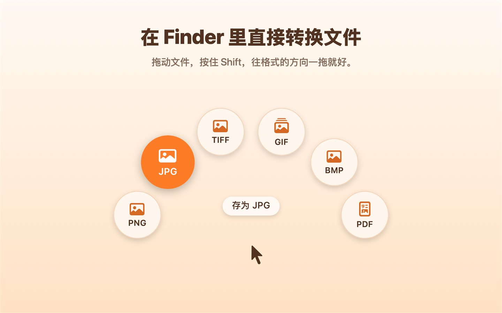
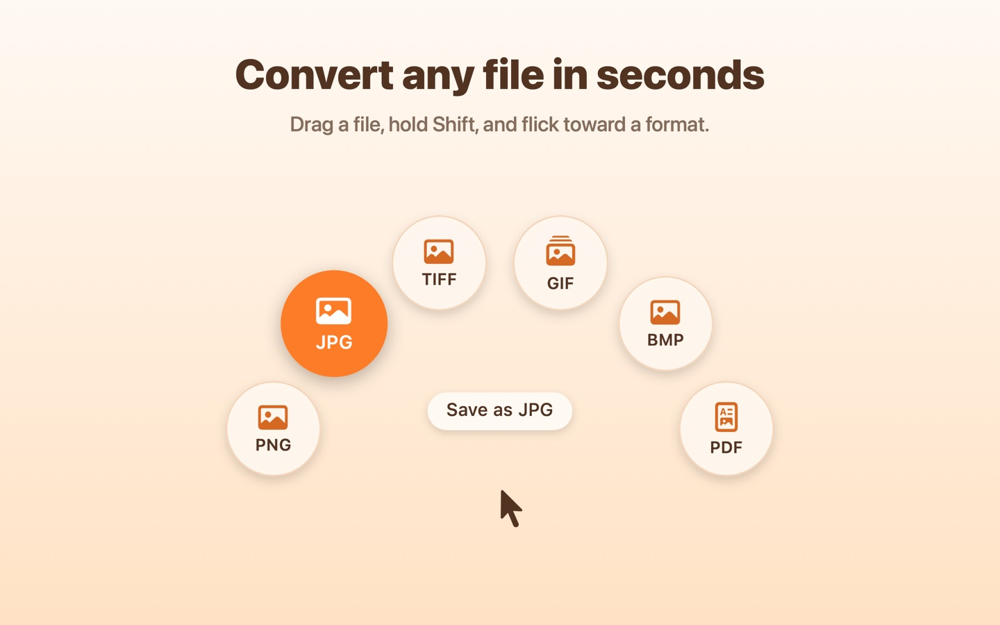
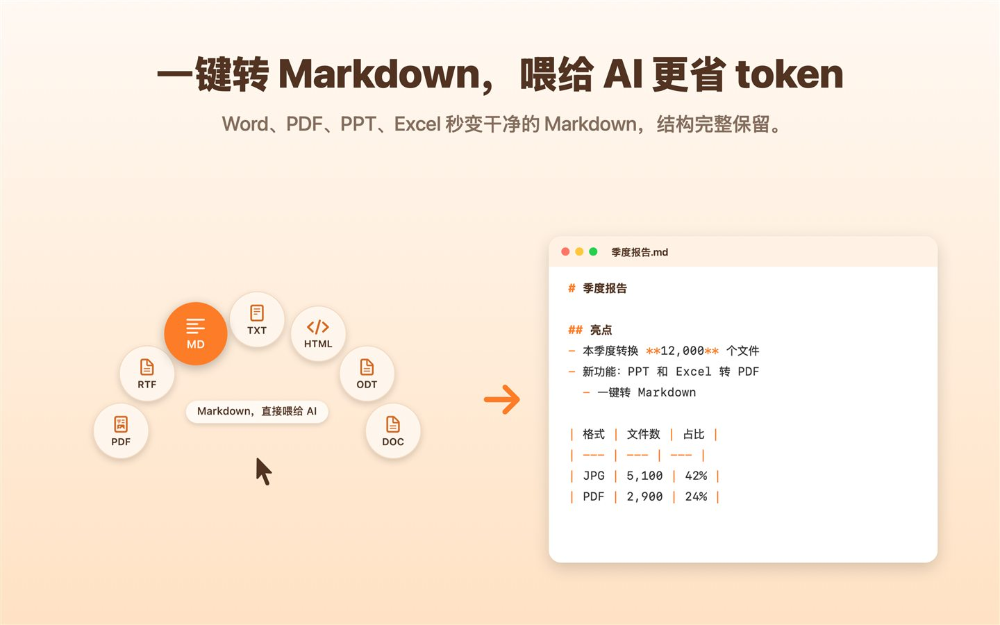
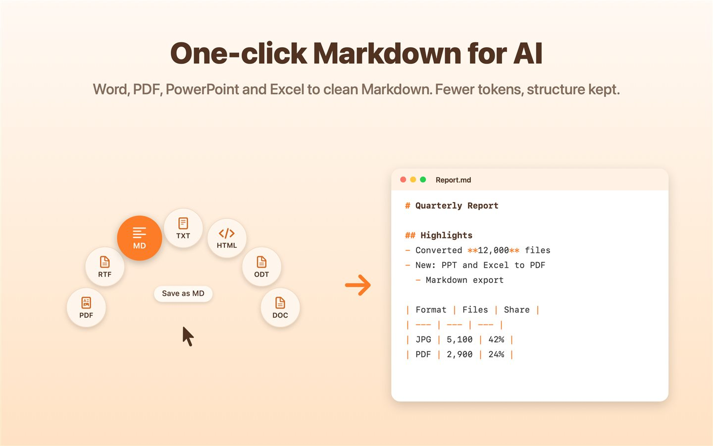
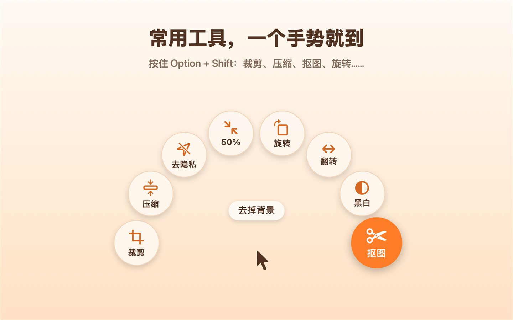
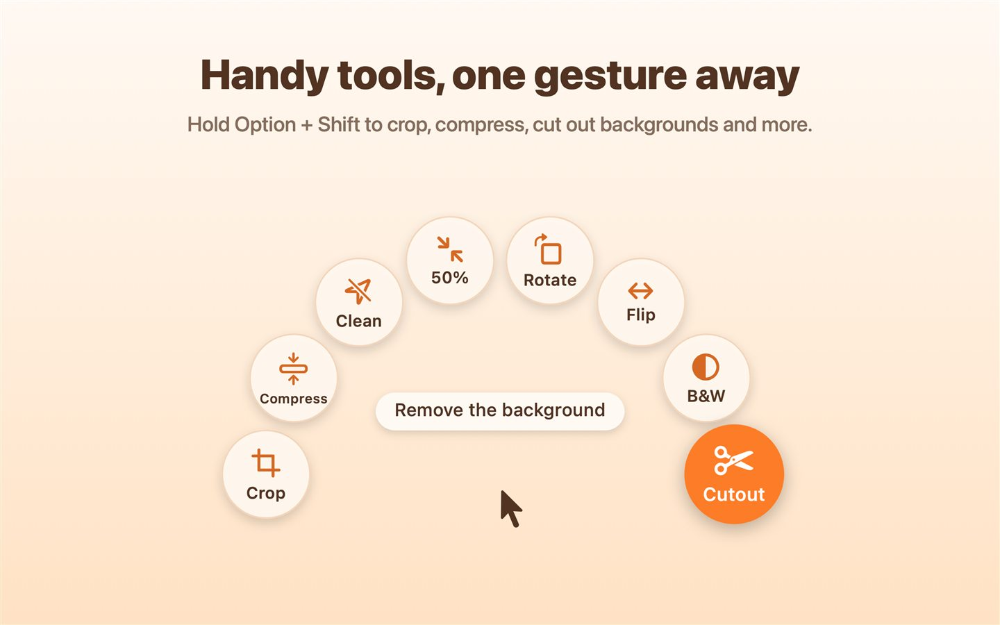

拖一下，文件就转好了 Convert files with a drag
拖动文件时按住 Shift，鼠标旁就会弹出一排格式按钮，往想要的格式一拖就好。免费、开源、不联网，Mac 和 Windows 都能用。 Hold Shift while dragging a file and a ring of format buttons pops up next to the pointer. Drop it on one and you're done. Free, open source, fully offline — for Mac and Windows.
macOS
macOS 14 或更新 · Apple 芯片和 IntelmacOS 14 or later · Apple silicon & Intel
下载后解压，把 FileFlipper 拖进「应用程序」。第一次打开见 安装帮助。Unzip it and drag FileFlipper into Applications. First launch: see install help.
Windows
Windows 10 / 11 · 64 位Windows 10 / 11 · 64-bit
双击安装，不需要管理员权限。也可以下载免安装版 (.zip)。Double-click to install — no admin rights needed. Or get the portable .zip.
免费 · MIT 开源 · 文件不会上传到任何地方Free · MIT open source · Your files never leave your computer
按住 Shift，往格式的方向一拖Hold Shift, flick toward a format
不用打开任何软件，不用找菜单。在 Mac 的访达、Windows 的文件资源管理器里直接完成，转好的新文件就在原文件旁边。No app to open, no menus to dig through. It works right in Finder on Mac and File Explorer on Windows, and the converted copy lands next to the original.






能做什么What it does
常见的图片、文档、PDF、PPT、Excel、视频、音频都能转。Images, documents, PDFs, slides, spreadsheets, video and audio.
一键转 Markdown，喂给 AIOne-click Markdown for AI
Word、PDF、PPT、Excel 转成干净的 Markdown，保留标题、列表和表格，粘贴给 ChatGPT、Claude、DeepSeek、Kimi 更省 token。Word, PDF, PowerPoint and Excel become clean Markdown with headings, lists and tables — fewer tokens for ChatGPT, Claude or Gemini.
图片格式Image formats
HEIC 转 JPG，PNG、JPG、TIFF、GIF、BMP 互转，图片转 PDF。HEIC to JPG, convert between PNG, JPG, TIFF, GIF and BMP, images to PDF.
PDFPDF
PDF 转图片、文字、Word；压缩、旋转、拆分、合并；扫描件自动 OCR 识别中英文。PDF to images, text or Word; compress, rotate, split, merge; scans are read with built-in OCR.
文档和 OfficeDocuments & Office
Word、RTF、ODT、网页互转，PPT 和 Excel 转 PDF。Word, RTF, ODT and HTML back and forth; PowerPoint and Excel to PDF.
视频和音频Video & audio
视频转 GIF、提取声音、压缩、转 720p、静音、截帧；音频格式互转。Video to GIF, extract audio, compress, 720p, mute, grab a frame; convert audio.
图片小工具Image tools
裁剪、压缩、去除定位信息、缩小一半、旋转、翻转、黑白、抠图。Crop, compress, strip location data, half size, rotate, flip, black & white, cut out.
三步上手Three steps
装好后它安静地待在菜单栏（Mac）或任务栏右下角的通知区域（Windows）。Once installed it sits quietly in the menu bar (Mac) or the notification area (Windows).
按住文件开始拖Start dragging a file
在访达或文件资源管理器里，按住鼠标拖动文件（不要松开）。In Finder or File Explorer, click and hold a file and start dragging.
按住 ShiftHold Shift
鼠标旁弹出一排圆形按钮，每个是一种格式。按钮出现后就可以松开 Shift。Round buttons appear around the pointer, one per format. You can let go of Shift once they're up.
往格式方向松手Drop on a format
往想要的按钮方向一拖再松开，新文件就保存在原文件旁边，不会覆盖任何文件。Move toward the one you want and let go. The new file is saved next to the original — nothing is overwritten.
| Mac | Windows | |
|---|---|---|
| 转换格式Convert | Shift | Shift |
| 工具（裁剪、压缩、抠图…）Tools (crop, compress, cut out…) | Option + Shift | Ctrl + Shift |
| 不想拖？用右键Prefer right-click? | — | 右键 → 发送到 → FileFlipperRight-click → Send to → FileFlipper |
第一次打开First launch
下载版没有付费的开发者签名，系统第一次会提示一下，按下面做一次就好。The downloads aren't signed with a paid developer certificate, so your computer asks once. Here's what to do.
macOS
- 双击 FileFlipper.zip 解压，把 FileFlipper 拖进「应用程序」。
- 双击打开，提示「无法验证开发者」时点「完成」（不要移到废纸篓）。
- 打开「系统设置 → 隐私与安全性」，往下滚动，点「仍要打开」。
- 再次打开 FileFlipper，点「打开」。之后屏幕右上角会出现 ◎ 图标。
- Double-click FileFlipper.zip and drag FileFlipper into Applications.
- Open it. When macOS says it can't verify the developer, click Done (not Move to Trash).
- Go to System Settings → Privacy & Security, scroll down and click Open Anyway.
- Open FileFlipper again and click Open. Look for the ◎ icon in the menu bar.
Windows
- 双击 FileFlipper-Windows-Setup.exe。
- 如果出现蓝色的「Windows 已保护你的电脑」，点「更多信息」→「仍要运行」。
- 按提示安装（勾选「开机时启动」更方便）。
- FileFlipper 的图标出现在屏幕右下角的通知区域（可能在 ^ 里），就可以开始用了。
- Double-click FileFlipper-Windows-Setup.exe.
- If a blue “Windows protected your PC” box appears, click More info → Run anyway.
- Follow the steps (keep “Start when I sign in” checked).
- The FileFlipper icon appears in the notification area at the bottom-right (maybe under ^). You're ready.
HEIC 照片需要 Microsoft Store 里的「HEIF 图像扩展」和「HEVC 视频扩展」；扫描件 OCR 使用 Windows 自带的文字识别。HEIC photos need “HEIF Image Extensions” and “HEVC Video Extensions” from the Microsoft Store; OCR for scans uses Windows' built-in text recognition.
常见问题FAQ
会上传我的文件吗？Are my files uploaded?
不会。所有转换都在你自己的电脑上完成，FileFlipper 不联网。代码全部开源，任何人都可以检查。Never. Everything runs on your own computer and FileFlipper doesn't use the network. All the code is open for anyone to check.
真的免费吗？Is it really free?
是的，基于 MIT 许可证开源，可以免费使用、修改和分享。Yes. It's open source under the MIT License — free to use, change and share.
按住 Shift 拖文件，按钮没出现？I hold Shift while dragging but nothing appears.
先确认 FileFlipper 在运行（Mac 看右上角菜单栏，Windows 看右下角通知区域），并且菜单里「启用」是勾选的。要先按住鼠标开始拖，再按 Shift。只支持文件，不支持文件夹。Make sure FileFlipper is running (menu bar on Mac, notification area on Windows) and “Enabled” is checked in its menu. Start dragging first, then hold Shift. It works with files, not folders.
Windows 上 Shift 拖动原本是「移动文件」，会冲突吗？On Windows, Shift-drag normally moves files. Does this get in the way?
不会。按钮只出现在鼠标附近；继续拖出按钮范围，按钮就会消失，照常移动文件。也可以在托盘菜单里暂时关掉「启用」。No. The buttons only cover the area around the pointer — keep dragging past them and they disappear, so the normal move still works. You can also turn off “Enabled” in the tray menu.
怎么卸载？How do I uninstall it?
Mac：退出后把 FileFlipper 从「应用程序」拖到废纸篓。Windows：在「设置 → 应用」里卸载 FileFlipper。Mac: quit it and drag FileFlipper from Applications to the Trash. Windows: uninstall it from Settings → Apps.